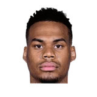

“In addition, now more than ever you need to have a deep bench, 10-12 players in the rotation to be able to think about a good result. Nikola Jokic, Luka Doncic and Giannis Antetokounmpo are great players, incredible, but they all have to be involved in the action and play well. That goes for every team, every contender for gold, every team on the planet that wants something more. It’s great when you have an extra class, but you also need a support system that will always be involved in both phases”

What Boris Diaw has said about other NBA players and coaches
4 quotes from Boris Diaw about 6 other people around the NBA, newest first. Each one links to its original source.
Best quotes
Diaw understands Okobo’s first-year learning curve in both the NBA and the U.S. Through frequent text exchanges, Diaw preaches patience, strong work ethic and reacting positively to adversity such as sporadic playing time and mounting losses for this young Suns team.
“Little by little, I think (Okobo) can be somebody that they can count on for on-ball defense, as well as being able to spark some offense,”
Ethan J. Skolnick:Boris Diaw on Bosh's touches:
“We view him as an important part of their offense & that's why we give him so much respect.”
What NBA players and coaches have said about Boris Diaw →
Quotes per season
Boris Diaw talks most about
 Chris Bosh1 quote
Chris Bosh1 quote
Elie Okobo1 quote Giannis Antetokounmpo1 quote
Giannis Antetokounmpo1 quote Luka Doncic1 quote
Luka Doncic1 quote Nikola Jokic1 quote
Nikola Jokic1 quote Rudy Gobert1 quote
Rudy Gobert1 quote
2022-23
1 quote“In addition, now more than ever you need to have a deep bench, 10-12 players in the rotation to be able to think about a good result. Nikola Jokic, Luka Doncic and Giannis Antetokounmpo are great players, incredible, but they all have to be involved in the action and play well. That goes for every team, every contender for gold, every team on the planet that wants something more. It’s great when you have an extra class, but you also need a support system that will always be involved in both phases”
2018-19
1 quoteDiaw understands Okobo’s first-year learning curve in both the NBA and the U.S. Through frequent text exchanges, Diaw preaches patience, strong work ethic and reacting positively to adversity such as sporadic playing time and mounting losses for this young Suns team.
“Little by little, I think (Okobo) can be somebody that they can count on for on-ball defense, as well as being able to spark some offense,”
2016-17
1 quoteAndy Larsen:Diaw on Gobert:
“He's okay. He's coming back. He wants to be on the court with us & play, but he doesn't want to come back too quick.”
2013-14
1 quoteEthan J. Skolnick:Boris Diaw on Bosh's touches:
“We view him as an important part of their offense & that's why we give him so much respect.”